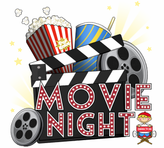

The story and artwork in this anime are stunning. I also appreciate the overall message of the movie; concern for the environment.
I really enjoyed this film. The story, the reality of the main character's situation, was very sad; however the fantasy sequences were empowering.
I watch this every holiday season. It makes me laugh intensly. My family and I are always quoting the best lines from the movie.
